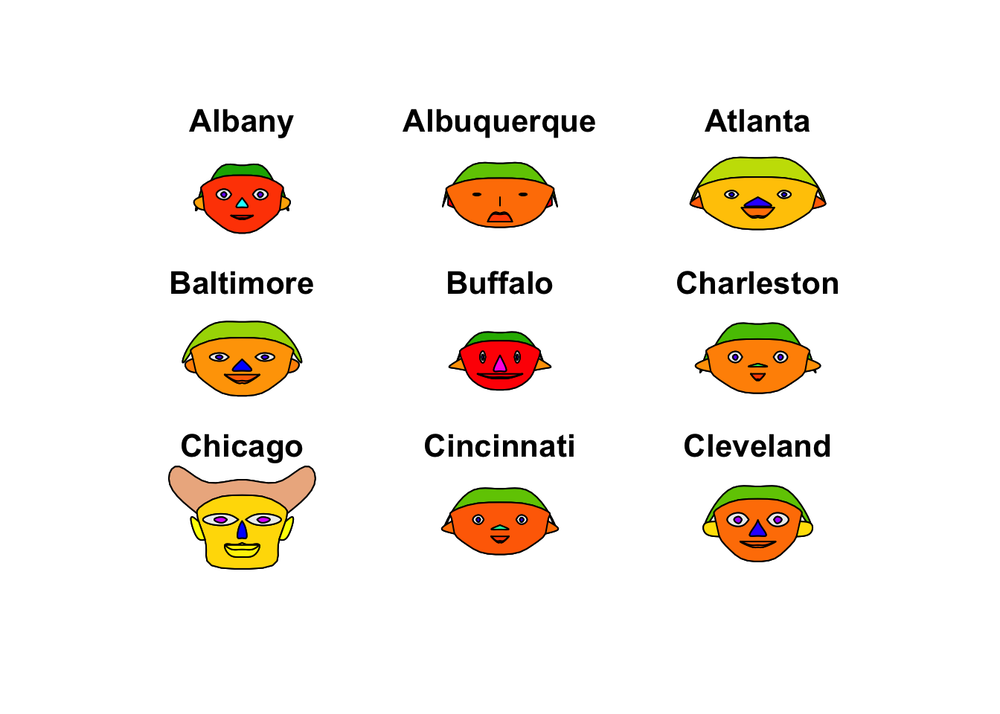

Multivariate Stats
Tiago dos Santos
2018-09-30
1 Lesson 2
1.1 Variance and Corrected Variance
1.1.1 Variance
\[ S_{n}^2 = \frac{1}{N}\sum\limits_{i=1}^{N}(X_{i} - \overline{X})^2 \] \[ S_{n}^2 = \frac{1}{N}\sum\limits_{i=1}^{N}(X_{i} - \overline{X})(X_{i} - \overline{X}) \]
1.1.2 Corrected Variance
\[ S_{n-1}^2 = \frac{1}{n}\sum\limits_{i=1}^{n-1}(X_{i} - \overline{X})^2 \]
\[ S_{n-1}^2 = \frac{1}{n}\sum\limits_{i=1}^{n-1}(X_{i} - \overline{X})(X_{i} - \overline{X}) \]
1.1.3 Covariance
\[Cov(x,y) = \frac{1}{n-1}\sum\limits_{i=1}^{n}(x_{i} - \overline{x})(y_{i} - \overline{y}) \]
\[Cov(x,y) = Cov(y,x) \]
1.1.4 Pearson Correlation Coefficient
\[r_{xy} = \frac{Cov(x,y)}{\sqrt{S_{x}^2 \times S_{y}^2}}\]
The domain of this coefficient is [-1, 1]
\[ \Sigma = V^{\frac{1}{2}} \]
1.2 Exercises
X = matrix(c(42,52,48,58,4,5,4,3),4)
XMeans <- apply(X, 2, mean)
XVars <- var(X)
Xcor <- cor(X)dados <- as.data.frame(readxl::read_xlsx(file.path(datasetsDir,"data1.xlsx")))
aplpack::faces(HSAUR3::USairpollution[1:9,], print.info = F)## Warning in fun(libname, pkgname): couldn't connect to display ":0"
meanVector <- c(5,10)
Sigma <- matrix(c(9,16,16,64),2)
Sigma.eigen <- eigen(Sigma)The eigen values are 68.3158765, 4.6841235
TO obtain the ellipse containing 95% of the population, we must calculate
\[(x-\mu)' \times \Sigma^{-1} \times (x-\mu)' <= \chi^2_{(2)0.95}\]